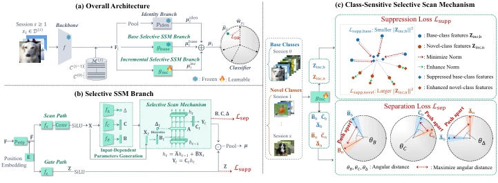
Mamba-FSCIL: Dynamic Adaptation with Selective State Space Model for Few-Shot Class-Incremental Learning. Xiaojie Li, Yibo Yang, Jianlong Wu#, Yue Yu, Ming-Hsuan Yang, Liqiang Nie, Min Zhang. TPAMI 2026 [Code]
I am currently a Research Fellow in the Department of Computing at The Hong Kong Polytechnic University, working with Prof. Changwen Chen. I received my bachelor's degree in 2016 and master's degree in 2019 from Beihang University. I obtained my Ph.D. in Computer Science and Technology from Harbin Institute of Technology (Shenzhen) in 2026, supervised by Prof. Min Zhang and Prof. Liqiang Nie. Previously, I was an R&D Manager in the Intelligent Automotive Group at SenseTime Group Inc. (2019–2022), working with Fei Wang and Chen Qian. My research interests include continual learning, video understanding, and embodied intelligence. My work has been published in TPAMI, CVPR, ECCV, NeurIPS, ICML, and ACM MM.
Students and industry researchers interested in embodied intelligence, multimodal learning, or video understanding are welcome to contact me for research collaboration (xiaojieli0903@gmail.com).
(# Corresponding Author, * Equal Contribution)

Mamba-FSCIL: Dynamic Adaptation with Selective State Space Model for Few-Shot Class-Incremental Learning. Xiaojie Li, Yibo Yang, Jianlong Wu#, Yue Yu, Ming-Hsuan Yang, Liqiang Nie, Min Zhang. TPAMI 2026 [Code]
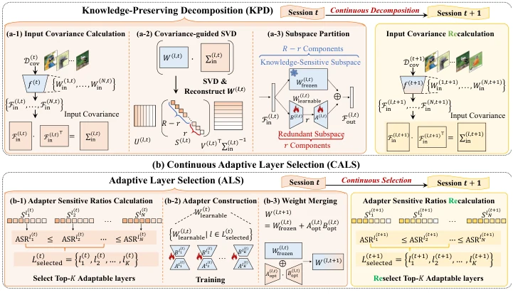
Continuous Knowledge-Preserving Decomposition with Adaptive Layer Selection for Few-Shot Class-Incremental Learning. Xiaojie Li, Wei Liu, Bei Wang, Jianlong Wu#, Yue Yu, Min Zhang. ACM MM 2026 [Code]
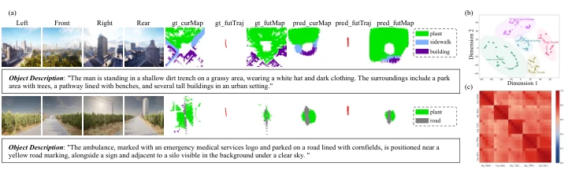
AirForesight: Current-to-Future Spatial Map Imagination with Cross-Space Planning Consistency for UAV-VLN. Yutong Liu*, Xiaojie Li*#, Mingzhu Xu, Jianlong Wu#. ACM MM 2026
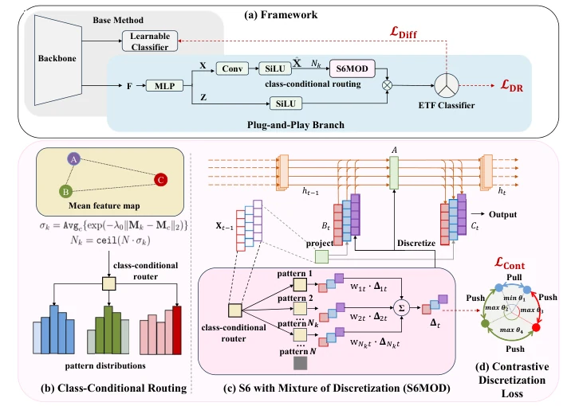
Enhancing Online Continual Learning with Plug-and-Play State Space Model and Class-Conditional Mixture of Discretization. Sihao Liu, Yibo Yang#, Xiaojie Li, David A. Clifton, Bernard Ghanem. CVPR 2025
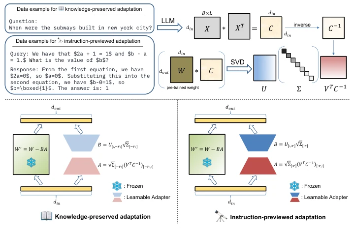
CorDA: Context-Oriented Decomposition Adaptation of Large Language Models for Task-Aware Parameter-Efficient Fine-tuning. Yibo Yang, Xiaojie Li, Zhongzhu Zhou, Shuaiwen Leon Song, Jianlong Wu, Liqiang Nie#, Bernard Ghanem#. NeurIPS 2024 [Code]
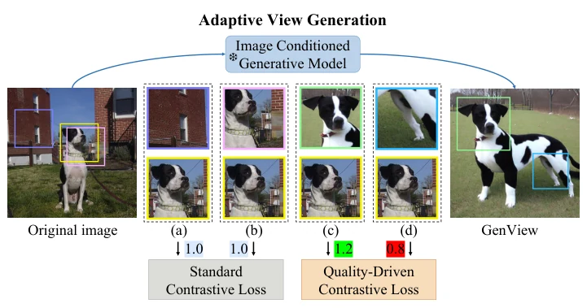
GenView: Enhancing View Quality with a Pretrained Generative Model for Self-Supervised Learning. Xiaojie Li, Yibo Yang#, Xiangtai Li, Jianlong Wu#, Yue Yu, Bernard Ghanem, Min Zhang. ECCV 2024 [Code]
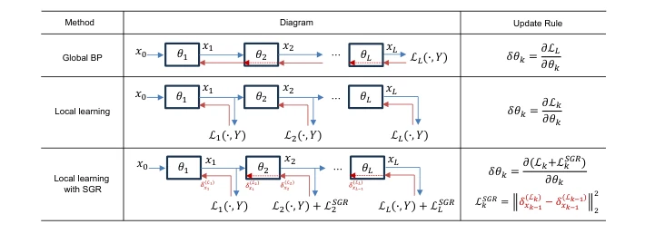
Towards Interpretable Deep Local Learning with Successive Gradient Reconciliation. Yibo Yang, Xiaojie Li, Motasem Alfarra, Hasan Hammoud, Adel Bibi, Philip Torr, Bernard Ghanem. ICML 2024
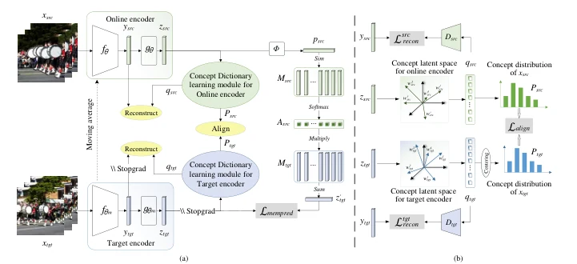
Fine-grained Key-Value Memory Enhanced Predictor for Video Representation Learning. Xiaojie Li, Jianlong Wu#, Shaowei He, Shuo Kang, Yue Yu, Liqiang Nie, Min Zhang. ACM MM 2023 [Code]
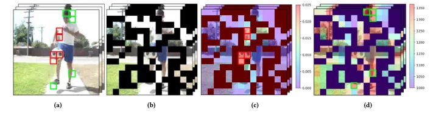
Mask Again: Masked Knowledge Distillation for Masked Video Modeling. Xiaojie Li, Shaowei He, Jianlong Wu#, Yue Yu, Liqiang Nie#, Min Zhang. ACM MM 2023 [Code]
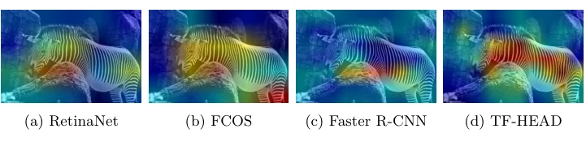
HEAD: HEtero-Assists Distillation for Heterogeneous Object Detectors. Luting Wang, Xiaojie Li, Yue Liao#, Zeren Jiang, Jianlong Wu, Fei Wang, Chen Qian, Si Liu. ECCV 2022 [Code]
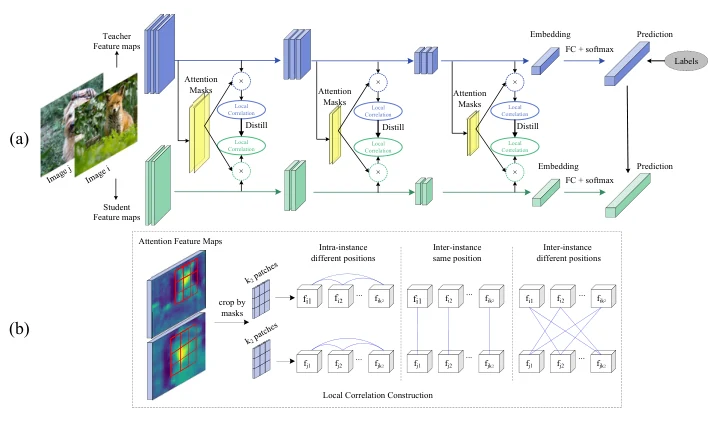
Local Correlation Consistency for Knowledge Distillation. Xiaojie Li, Jianlong Wu#, Hongyu Fang, Yue Liao, Fei Wang, Chen Qian. ECCV 2020
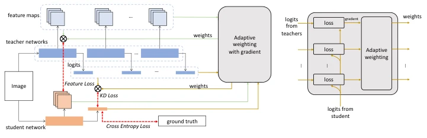
Agree to Disagree: Adaptive Ensemble Knowledge Distillation in Gradient Space. Shangchen Du*, Shan You*#, Xiaojie Li, Jianlong Wu#, Fei Wang, Chen Qian, Changshui Zhang. NeurIPS 2020
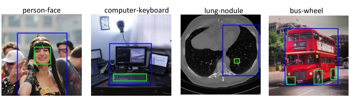
Detector-in-Detector: Multi-level Analysis for Human-Parts. Xiaojie Li, Lu Yang, Qing Song, Fuqiang Zhou. ACCV 2018
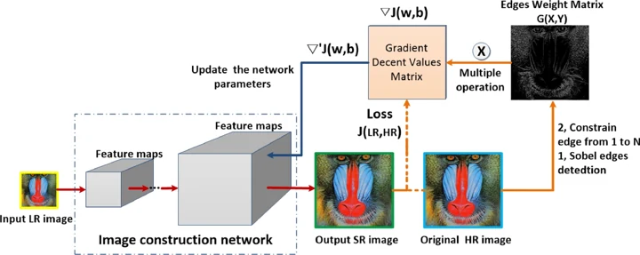
High-Frequency Details Enhancing DenseNet for Super-Resolution. Fuqiang Zhou, Xiaojie Li, Zuoxin Li. Neurocomputing 2018